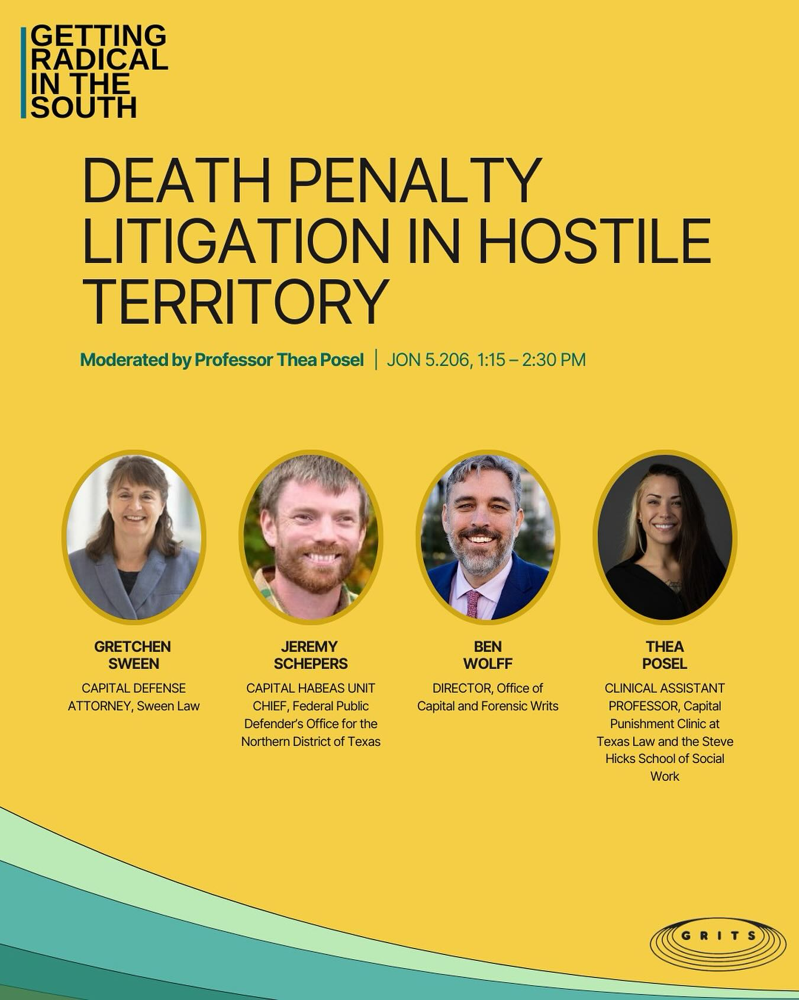
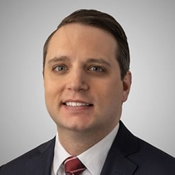
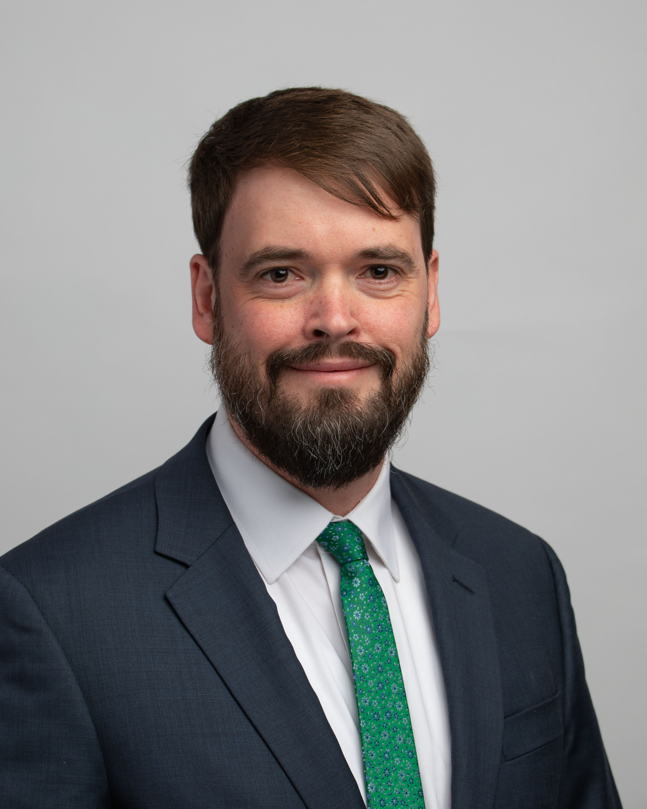

Emily M. Ferguson

Previously owner-selected source recovered from OT25 bundle; submitted as candidate for current recording.
Source · 800 × 800
Previously supplied and approved by the owner.Checked 7 November 2026. Current recording: Guerrero v. Johnson, 25-1003. Ferguson’s saved portrait and Schepers’s source graphic were added as review candidates; Schepers uses the cloud crop workflow. Future portraits remain local candidates.
Previously owner-selected source recovered from OT25 bundle; submitted as candidate for current recording.
Source · 800 × 800
Previously supplied and approved by the owner.
Named second portrait from left in GRITS poster; source submitted for cloud crop and review.
Source · 1350 × 1688
Named portrait label and matching Northern District of Texas Capital Habeas Unit Chief biography; current hearing list confirms advocate.
Downloaded and visually checked; pending owner approval for future use.
Source · 255 × 255
Official 25-417 docket lists Joshua Morgan Wesneski, Weil, Washington DC and joshua.wesneski@weil.com; exact email, employer and location on named firm biography.
Downloaded and visually checked; pending crop and owner approval for future use.
Source · 3343 × 4178
Official 25-966 docket lists Robert Everett Johnson, Institute for Justice, Shaker Heights OH and rjohnson@ij.org. Same email and employer on named Rob Johnson biography.Preferred replacement pasted by owner on November 8, 2026; submitted to cloud square crop and review.
Owner-selected Texas Law source · 320 × 400
Official calendars and hearing lists. Sessions begin at 10 a.m. Eastern. The second case follows the first; no fixed start time is assumed.
| Date | Case | Speakers / portrait coverage |
|---|---|---|
| 2026-11-09 | Nielsen v. Watanabe 25-417 | Lucas M. Walker — existing local portrait Vivek Suri — existing local portrait Joshua M. Wesneski — new candidate saved |
| 2026-11-09 | Hoffmann v. WBI Energy Transmission, Inc. 25-159 | Robert J. McNamara — existing local portrait Paul W. Hughes — existing local portrait Zoe A. Jacoby — existing local portrait |
| 2026-11-10 | Department of Labor v. Sun Valley Orchards, LLC 25-966 | Sarah M. Harris — existing local portrait Robert E. Johnson — new candidate saved |
| 2026-11-30 | Crowther v. Board of Regents of University System of Georgia 25-183 | Hearing list not yet posted; arguing advocates unconfirmed. |
| 2026-11-30 | Wassily v. Blanche 25-842 | Hearing list not yet posted; arguing advocates unconfirmed. |
| 2026-12-01 | Jouppi v. Alaska 25-246 | Hearing list not yet posted; arguing advocates unconfirmed. |
| 2026-12-02 | Viramontes v. Cook County / Grant v. Higgins (consolidated) 25-238 & 25-566 | Hearing list not yet posted; arguing advocates unconfirmed. |
| 2026-12-07 | International Partners for Ethical Care, Inc. v. Ferguson 25-840 | Hearing list not yet posted; arguing advocates unconfirmed. |
| 2026-12-08 | Republican National Committee v. Mi Familia Vota 25-1017 | Hearing list not yet posted; arguing advocates unconfirmed. |
| 2026-12-09 | Department of Homeland Security v. D. V. D. 26-426 | Hearing list not yet posted; arguing advocates unconfirmed. |
| 2026-12-09 | Grand v. City of University Heights 25-965 | Hearing list not yet posted; arguing advocates unconfirmed. |
| 2027-01-11 | Montoya Palacios v. Liggins 25-1223 | Hearing list not yet posted; arguing advocates unconfirmed. |
| 2027-01-11 | Apple Inc. v. Epic Games, Inc. 25-1311 | Hearing list not yet posted; arguing advocates unconfirmed. |
| 2027-01-12 | Riseandshine Corp. v. PepsiCo, Inc. 24-1016 | Hearing list not yet posted; arguing advocates unconfirmed. |
| 2027-01-13 | Kian v. Florida 25-6623 | Hearing list not yet posted; arguing advocates unconfirmed. |
| 2027-01-19 | Marschner v. Marschner 25-1349 | Hearing list not yet posted; arguing advocates unconfirmed. |
| 2027-01-20 | Missionaries of St. John the Baptist, Inc. v. Frederic 25-1131 | Hearing list not yet posted; arguing advocates unconfirmed. |